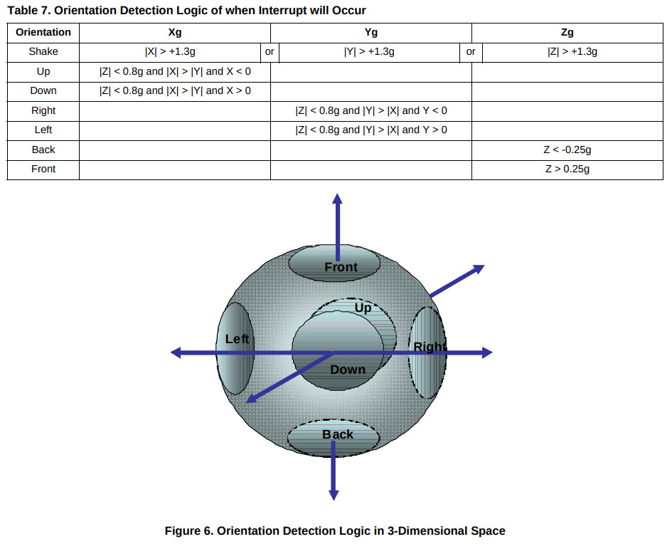

main.c
#include <stdio.h>
#include <stdlib.h>
#include <unistd.h>
#include <time.h>
#include <fcntl.h>
#include <string.h>
#include <sys/stat.h>
#include <sys/types.h>
#include <sys/epoll.h>
#include <linux/input.h>
#include <linux/joystick.h>
int main(int argc, char** argv)
{
struct js_event js;
int fd = open("/dev/input/js1", O_RDONLY);
while (1) {
if (read(fd, &js, sizeof(struct js_event)) == sizeof(struct js_event)) {
if (js.type == JS_EVENT_AXIS) {
printf("%d: %d \n", js.number, js.value);
}
}
usleep(30000);
}
return 0;
}
方向對照
